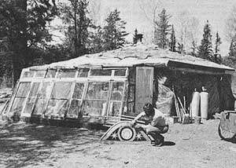
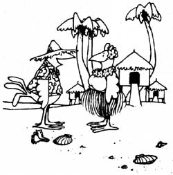

Hay Houses And Straw Buildings: Happiness Is A Hay House
This couple built a round house from square hay bales.
By the Mother Earth News editors
July/August 1979
For two winters (folks here in Minnesota measure time by winters) we've lived cozy and warm in our house of hay. Now before you start to spout three-little-pigs legends, let me assure you that our unorthodox home has been quite comfortable in 40-below weather, and-because it was always intended to be a temporary structure-we'll "huff and puff" our inexpensive little shelter down all by ourselves, someday.
Inspired by a Round Straw House
In the summer of 1977, we began to build an octagonal stone house, using the slip-form method popularized by Helen and Scott Nearing . . . but we had little concept of how long our project would take us. We simply proceeded with our plans, worked hard, and made a great deal of progress.
However, the area's first heavy snowstorm hit on October 11, and with it came the sobering realization that-however furiously we might work-it would be impossible for us to occupy our house before winter settled in.
At the time, we were living in a 10' X 11' screened hunting shack (the only building on our property when we bought it). We had crammed our bed, all the supplies for our stained-glass-window-making home business, an Ashley stove, a gas plate, a sink, a kitchen cupboard, tools, clothing, and (occasionally) two Russian wolfhounds into the small shelter. Of course, these were clearly impossible conditions under which to spend a long Minnesota winter ... especially since we expected a child in February! What's more . . . we couldn't afford an apartment in town, and moving in with friends for a whole winter was likely to result in damaged relationships.
Just when the situation looked hopeless, though, we remembered an article in MOTHER about a round haybale structure ... searched our copy out ... and realized we could modify that plan to produce a dwelling with a larger living and storage area and a stronger roof. We'd also seen diagrams of Mandan-and other Indian tribes'multi-sided pole lodges. Such a form seemed practical, because it would 'provide lots of internal space without requiring excessively long poles. Since a rounded shape appealed to us, we com bined the two ideas . . . and decided upon a pole structure with stacked hay walls. The center support area-at the greatest possible distance from the highly flammable walls-would be a perfect spot for our wood stove.
Building the Round Hay House
Luckily, our early October snow melted quickly, and we went into the woods to cut poles from some of the plentiful spruce trees. Because we knew winter could arrive at any moment, we didn't bother to peel the timber (although we found time to perform this important chore later). Nor did we creosote the wood used in the temporary shelter.
Our land had been a homestead years before, so it wasn't difficult to find a cleared, flat site with good drainage (a very necessary consideration, since we planned to use the ground for a floor).
We measured out our six-sided area and-with a posthole digger-dug evenly spaced, 2-1/2foot-deep holes. The 90-foot circumference of the structure consisted of a pole at each corner and one in the middle of each wall. We also sank six similar posts-in a hexagonal pattern around a six-foot diameter center area . . . and started to notch and lay cross beams and tie-in supports. It wasn't what you'd call "finish work", as the cuts and notches were done with a chain saw and all of our timber was simply spiked together.
With the walls framed in, we began work on the roof . . . because we didn't want to lay our hay bales until there was covering to protect them from rain or snow. We couldn't afford lumber, but with the help of friends managed to cup lots and lots of poles and create a nearly solid umbrella-like roof ... which would be sturdy enough to support "shingles' of plastic, hay, and sod. (We were careful to make the eaves project far enough to cover the walls . . . and then some! )
It was necessary to partially peel the roof poles . . . to prevent bark or rough spots from wearing holes in the plastic that went over the timbers. When the "umbrella" was assembled, we spread about 45 bales of hay-taken apart into pallets that we laid as close together as possible-on top of the plastic-covered wooden latticework. (This was to serve as insulation . . . but-as it turned outwasn't adequate for our cold northern winters.) Another layer of plastic went over the hay, and then we started to cut and lay sod . . . again with the welcomed help of friends.
Unfortunately, we didn't get the whole roof sodded before a big freeze came . . . and then snow. (When we finished the job -during the next spring and summer we found that the sod had been a big factor in protecting that top layer of plastic.
The sections of root that weren't covered had already started to deteriorate, and we had to patch them up before we could lay the rest of the turf. Also, if we'd had time, we would have ordered some more durable, heavy-gauge plastic . . . but we were forced to make do with what was available in our small town.)
The most complicated part of the construction involved the freestanding center section of the roof which would house our stovepipe ... and which required the use of store-bought lumber. We built a small mitered hexagon to fit around the Metalbestos stovepipe . . . and supported the wooden form with 2 X 4's radiating in and up from the center poles. Then we laid boards over the top of this entire center-roof structure and cut out square holes for three glass blocks that would serve as miniature skylights. No hay was used on this section-in the interests of fire safety-and the whole area was waterproofed with a layer of clear plastic placed topside.
Tricks for Using Hay Bale "Bricks"
When we learned that a friend had extra hay that year, we considered ourselves lucky to pay $200 for 200 bales. However-when we built our shop addition this fall-we found year-old hay selling for 35 cents a bale . . . so such leftover feed is the way to go if it's available. (We also think straw might be even better than hay, because it's mostly stalks and has more dead air space.)
It was, of course, important that the bottom row of hay not get damp, so we laid plastic down . . . put the bales on top of it . . . and then folded the sheets up and over our hay "bricks". Baling twine was used to tie each bale to its "neighbors" . . . and-since we had nailed diagonal braces between some of the outer posts many of the blocks could be attached to a pole as well.
Quickly, in a bricklayer's pattern, the walls went up . . . with lots of loose hay crammed into any open cracks as we went along. There were a number of places-at corners and around window areas-where we needed only a portion of a bale. In such cases we took the hay apart, retied as much of it as we needed, and saved the rest for stuffing.
We didn't have any problem obtaining windows, since we had a lot of old storm and casement units that we'd picked up for a dollar apiece at auctions or "discontinued" sales. We chose the worst of these for the hay house and saved the good windows for our future stone "mansion". But we did need frames that were deep enough to sit on a hay bale, and strong enough to support the 15 to 18 inches of fodder above. We also wanted to "double up" our glass surfaces for extra insulation.
At first, we built 12-inch-deep window frames from rough 2 X 6's. We later decided that this was "overkill engineering", however, so the rest of our units were made from salvaged 1 X 6 lumber. The corners were toenailed, and 2 X 4's were fastened around the inside to hold the two matching frames together and help create a tighter insulating air space between them.
Finally, we wedged the windows in on top of the third row of bales-in pairs, one from the inside and one from the outside-and nailed each frame to a support pole. (When spring came . . . we hinged some of our windows to open either up or to one side, and stapled screens on the outer wooden "borders".)
The door frame was made in much the same way as were the window supports . . . and it surrounded a heavy "double door" that had two inches of styrofoam sandwiched in the middle.
Weatherproofing the Hay Bale Building
We were almost done and glad of it, because the nights in our little shack were getting colder all the time and we didn't like trying to heat the great out-of-doors with our poor Ashley.
Our "final touches" consisted of stuffing as much hay as we could under the eaves and into the space that was left between the roof poles. We also laid our plastic vapor barrier on the ground, and then our rugs . . . and some used linoleum that designated the kitchen area. Last of all, we placed bricks in a bed of sand in the center section . . . to make a heatproof base for our new Defiant stove (and-although we've never had to use it -installed a fire extinguisher in a handy spot nearby)
It was 10 degrees below zero outside when we lit the first fire in our temporary home. Winter had arrived, but we were grateful that the cold weather had waited for us to finish-or almost finish-our house. During that first night, though, we realized that our home was simply not warm enough yet and that we would have to cover the walls with a good of plastic windbreak. Granted, such material isn't aesthetically pleasing, and it's a high-tech, petroleum-based product . . . but it seemed to be the only practical solution at that moment. The plastic was stretched over the inside walls and all the way around the outside of the structure. And, ah . . . what a difference the extra windproofing made!
However, we were still losing a lot of heat up through the roof ... we could tell-by the rate of snow-melt-that our six inches of hay simply didn't provide a sufficient barrier! So we had to solve the problem of how to hang fiberglass batts without damaging them (after all, you should be able to recycle the materials used in a temporary house!) when there were no conventional rafters to support the insulation.
Finally, we decided to string lengths of previously acquired army field telephone wire from the center crossties out to the circumference of the house . . . which created a loose webbing to support the fiberglass. Then with great difficulty-the batts were pushed up through the network, flattened out, and all the spaces between them closed up. Once the fiberglass was in place, we pulled the wires taut-drawing the batts up against the ceiling and retied each "cable". With additional insulation stapled against the central roof section, our house-which had taken a month to build and two more weeks to winterize-was as cozy as anyone could wish.
Our last cold-weather job was to build doghouse...which we accomplished in about an hour, using hay bales and old lumber. Once that was done, we knew the whole "family" would be warm.
An Extended Stay
When spring finally arrived, our minds turned to a garden . . . so, we constructed a sun-heated greenhouse against the hay home's south walls, with old railroad ties for a base and a recycled-lumber framework to support more salvaged storm windows. This hothouse allowed us to start plants early, as well as grow tomatoes and cucumbers well into the following October . . . which is quite late for northeastern Minnesota.
Last fall, to prepare for our second winter here, we restuffed the spaces under the eaves where the hay had settled. We also decided that the time had come to get our stained-glass work out of the living area proper . . . because our little daughter, Chris, was starting to get around the house on her own.
As it turned out, we had no trouble building an adjoining 9' X 12' shop . . . again, using the pole-and-hay technique. We replaced a window with a door that leads to the "crafts" area . . . and we heat the extra room-with a small gas stove-only when one of us is out there. What a joy to have so much room to work! And, by moving the shop to other quarters, we effectively increased our living area . . . so the 30-foot-diameter house with its 12-foot center ceiling and lack of interior walls feels more spacious than ever.
As another tribute to our daughter's new mobility, we closed off our wood stove by using the six center posts to support a chicken-wire fence . . . and installed a hinged gate to simplify the firetending chores.
When we built our hay home, we planned to occupy it for no more than one winter and summer . . . but it's proven to be so comfortable that we no longer feel rushed about completing our stone dwelling. Many people must go heavily in debt for a place to live, but we have ours . . . right here where our construction work is. And-besides our stained-glass-window business-we've taken part-time jobs to pay for our building materials as we go along. We've even bought a small saw-mill to make lumber-not only for our house-but for many projects to come.
If we'd rented a place in town until the "permanent" house was built, we would have been forced to take out a mortgage to cover our construction costs. So, even though the hay structure hasn't been as "temporary" as we originally intended, it has enabled us to live comfortably and do what we want to do.
And although we've enjoyed our $400 home (the greenhouse and shop combined cost another $100), we still anticipate the day when we'll look out from our great stone house and see an open area up here . . . knowing that the hay has gone for mulch and compost, the poles have been used for other projects, and we've recycled as many of the other materials as possible.
Hay structures help you beat the high cost of livestock shelter, too!
Other Straw Bale Buildings
When you need to shelter some livestock or poultry inexpensively-and in a hurry-consider building a hay or straw shed. Such structures have been around since the first thatched roof, and can be emergency livestock housing problem solvers, or (with well-constructed frames) can last for years . . . although the sides and/or roof may have to be repaired or renewed from time to time.
The most important consideration when erecting this type of shelter is the choice of a dry, well-drained location. If such a spot is unavailable, it'll be necessary to do some filling and grading to make sure the floor and the area outside the entrance-is higher than the surrounding ground . . . to avoid flooding.
The frame of an 18' X 24' shed, for example, should consist of at least three rows of firmly set (sink 'em three to four feet deep!) posts . . . one group making up the front of the structure, one the back, and the third running down the "middle" of the room. The distance between rows-and between the individual poles in each group-shouldn't be more than six or eight feet. Remember, too, that the frame supports should be tall enough to provide ample headroom for both humans and animals.
When the uprights are in place, heavy girders can be set along the tops of the three rows of posts. If sufficiently sturdy poles aren't available for this application, a pair of 2" X 10" or 2" X 12" planks-set on edge side by side and bolted together-will make a satisfactory beam.
Lighter poles can serve as cross pieces from the center girder to the outside walls. If these supports are placed 1-1/2 to 2 feet apart, they'll keep most of the straw from falling through. (By covering the poles with a thick layer of plastic, you can both increase the straw's insulating abilities and help prevent leaks.)
When you use straw for a roof, keep in mind that-while flax straw and long hay tend to shed water-oat, barley, or wheat straw will absorb considerable moisture, add to the roof's weight, and tend to leak in the spring. Any straw or hay roof, however, will provide good insulation and waterproofing if it's at least two feet thick at all points . . . and built up even higher at the center. Make sure, too, that you build the roof out over the side walls ... to carry the water away from the structure.
Old railroad ties, concrete blocks, flat stones, or plastic can be used to keep the hay walls off the ground. When building with bales in extremely cold climates, consider using a double row of "blocks" for each wall. Also, be sure to stuff hay between the walls and the roof to keep heat from escaping . . . and examine the structure periodically to make sure it hasn't settled. And, of course, wire fencing must cover all exposed hay surfaces ... to keep your critters from "eating themselves out of house and home".
The size of the building's openings will be determined by the type of livestock to be housed there, but try to put all doors and windows on one side (preferably the south) to avoid excessive drafts. Cloth or plastic may be tacked over the windows in the winter and taken off when more air is needed. Usually, you'll want a tight door . . . sometimes both storm and inner doors are necessary.
Loose hay can-when bales aren't available-also be used in outbuilding construction. Simply pack the material into a form consisting of two parallel rows of sturdy posts that are "walled" with strong wire fencing. (The packed hay should be three to four feet thick, and-of course must be closed in well enough to keep hungry livestock from pulling at the fodder.) As the straw settles, be sure to add more material to prevent cracks and drafts.
A cattle yard that's exposed to the wind can also be protected by constructing thick fences from bales of hay enclosed with posts and woven wire. However, open windbreaks generally need to be eight to ten feet high to provide adequate protection.
When straw and hay shelters are properly constructed and maintained, they can provide ideal places in which to fatten lambs, cattle, and hogs ... or for use as farrowing and lambing sheds, as shelter for wintering cattle, poultry houses, or simply as welcome summer shade.
So even if your budget is stretched to the breaking point, you can provide for your livestock's needs. Just remember that hay is the way!
 PHOTOS BY TH EAUTHOR [1] The Mc Elderrys made their hay house by erecting a hexagon frame . . . [2] adding a strong umbrella roof . . . [3] building a fire-resistant central ceiling and . . . [4] ""haying"" in the top and sides. [5] Cold weather convinced the couple to add plastic insulation and . . . [6] a hay doghouse for their Russian wolfhounds so the folks could . . . [7] run their stained glass business in warmth and peace. |
 A sun-heated greenhouse made of recycled materials was attached to the south wall |
 |